WELCOME TO DIY HACKS!!!
1. Get a paperclip that is a minimum of 2.5 in (6.4 cm) long. Look around your home or office for a paperclip to use to make a phone stand. Choose a paperclip that is covered in vinyl or plastic if possible to avoid any accidental scratches to your phone.
Use a larger paperclip if you want to make a stand for a larger device such as a tablet.
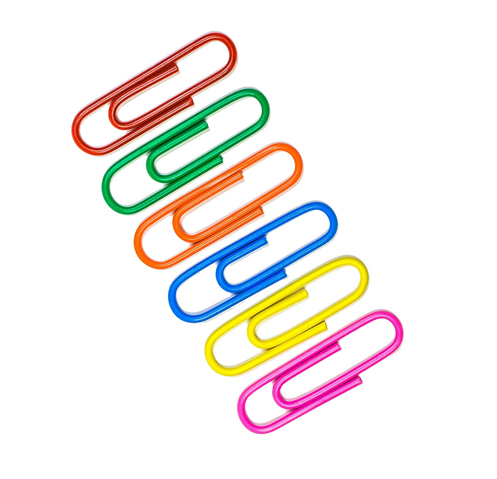
2.Straighten the paperclip out as much as possible. Use your hands to bend the paperclip out of the folded shape. Try to remove any small bumps or kinks in the clip. Use a pair of pliers if the paperclip is too difficult to straighten with your hands.
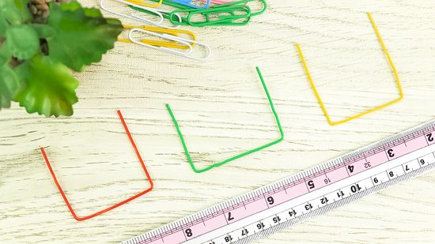
3.Bend the paperclip into thirds. Use pliers to create 2 corners in the straightened paperclip. Clamp the pliers where you want each corner to be and bend the end of the paper clip towards the pliers. Make each bend ⅓ away from each edge and at a 90° angle. Aim for the paperclip to look like 3 sides of a square shape.
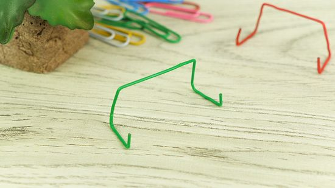
4.Fold 1⁄2 in (1.3 cm) of each end of the paperclip up at a 90° angle. Press the pliers close to each end of the paperclip. Bend each tip upwards and towards the pliers to create a corner that bends up from your work surface. This creates the "feet" of the phone stand that will prevent your phone from sliding forward.
5.Bend the 2 shorter edges of the paperclip into 90° angles. Use pliers to fold the edges of the feet into corner shapes. Aim to bend the paperclip in the middle of each short edge. The parts of the phone stand that point upward are the feet and the back of the stand. The arm section rests flat on your work surface. From the side, the phone stand will look like a square "U" shape.
6.Place your phone horizontally across the arms of the phone stand. Rest the phone stand on a flat surface so that the feet are pointing upwards and the arms are along the ground. Position your phone horizontally on the stand with the back of your phone supported by the tall back of the stand. The feet of the stand will be on the same side as the screen, stopping your phone from sliding forward.
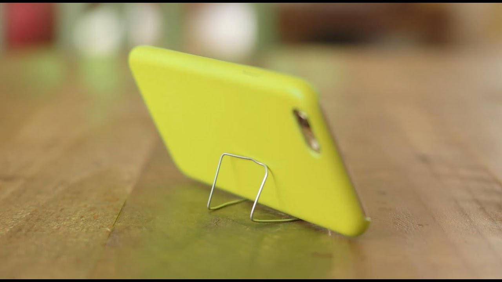
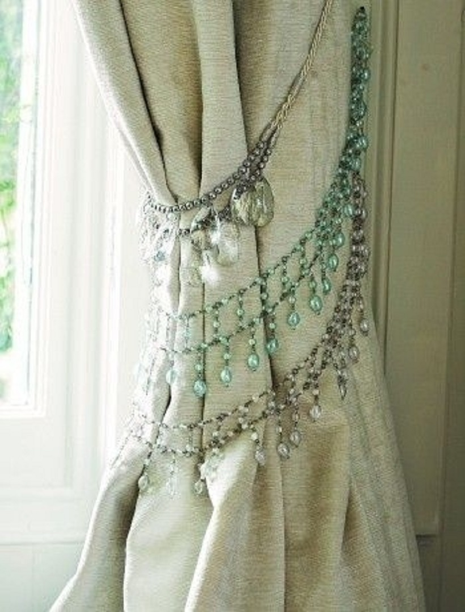
You can also use rope to hang a mirror on the wall. Use this idea for the bathroom. You can give the space a chic and inexpensive makeover this way. Of course, the idea can also be applied to all sorts of other spaces and situations.
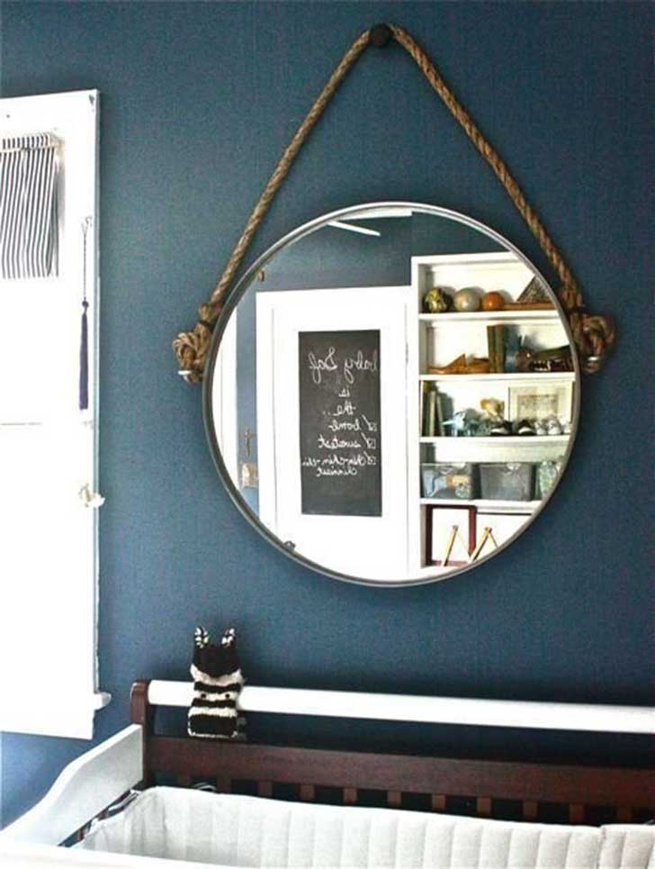
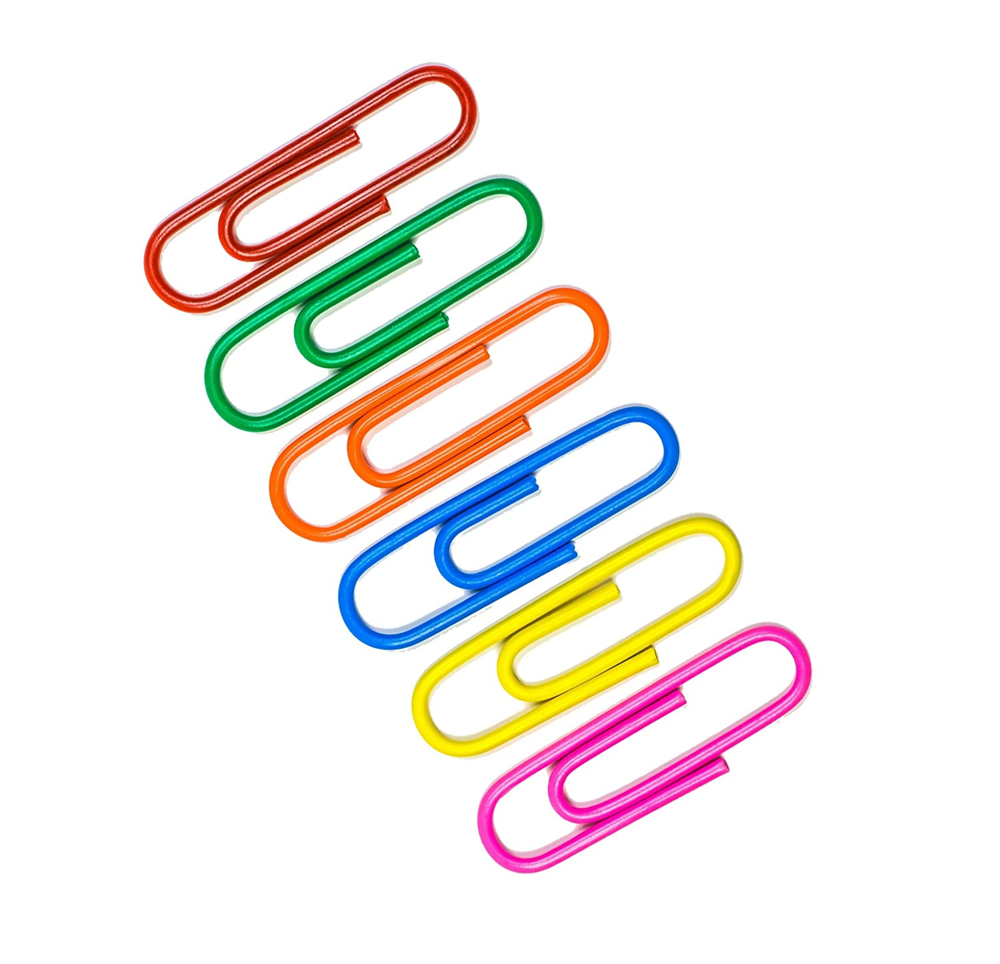
2.Straighten the paperclip out as much as possible. Use your hands to bend the paperclip out of the folded shape. Try to remove any small bumps or kinks in the clip. Use a pair of pliers if the paperclip is too difficult to straighten with your hands.
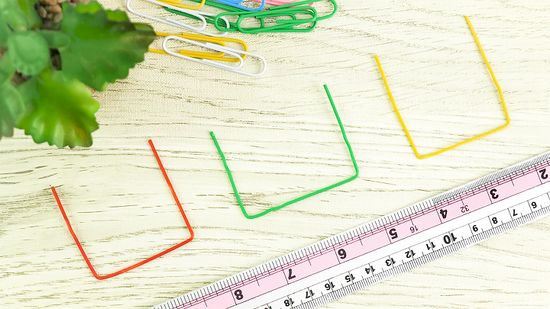
3.Bend the paperclip into thirds. Use pliers to create 2 corners in the straightened paperclip. Clamp the pliers where you want each corner to be and bend the end of the paper clip towards the pliers. Make each bend ⅓ away from each edge and at a 90° angle. Aim for the paperclip to look like 3 sides of a square shape.
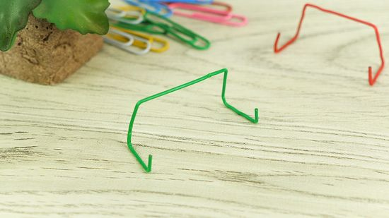
4.Fold 1⁄2 in (1.3 cm) of each end of the paperclip up at a 90° angle. Press the pliers close to each end of the paperclip. Bend each tip upwards and towards the pliers to create a corner that bends up from your work surface. This creates the "feet" of the phone stand that will prevent your phone from sliding forward.
5.Bend the 2 shorter edges of the paperclip into 90° angles. Use pliers to fold the edges of the feet into corner shapes. Aim to bend the paperclip in the middle of each short edge. The parts of the phone stand that point upward are the feet and the back of the stand. The arm section rests flat on your work surface. From the side, the phone stand will look like a square "U" shape.
6.Place your phone horizontally across the arms of the phone stand. Rest the phone stand on a flat surface so that the feet are pointing upwards and the arms are along the ground. Position your phone horizontally on the stand with the back of your phone supported by the tall back of the stand. The feet of the stand will be on the same side as the screen, stopping your phone from sliding forward.
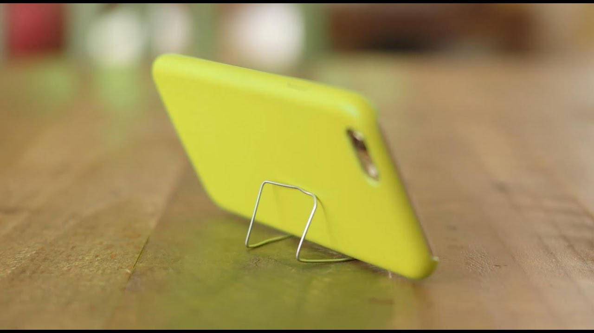
2.Turn a necklace into a tieback
You should definitely check your jewelry boxes for any old necklaces you no longer like. You can turn these into tiebacks for your curtains. It is a very easy project and you can use the idea to add a glamorous touch to your home décor.
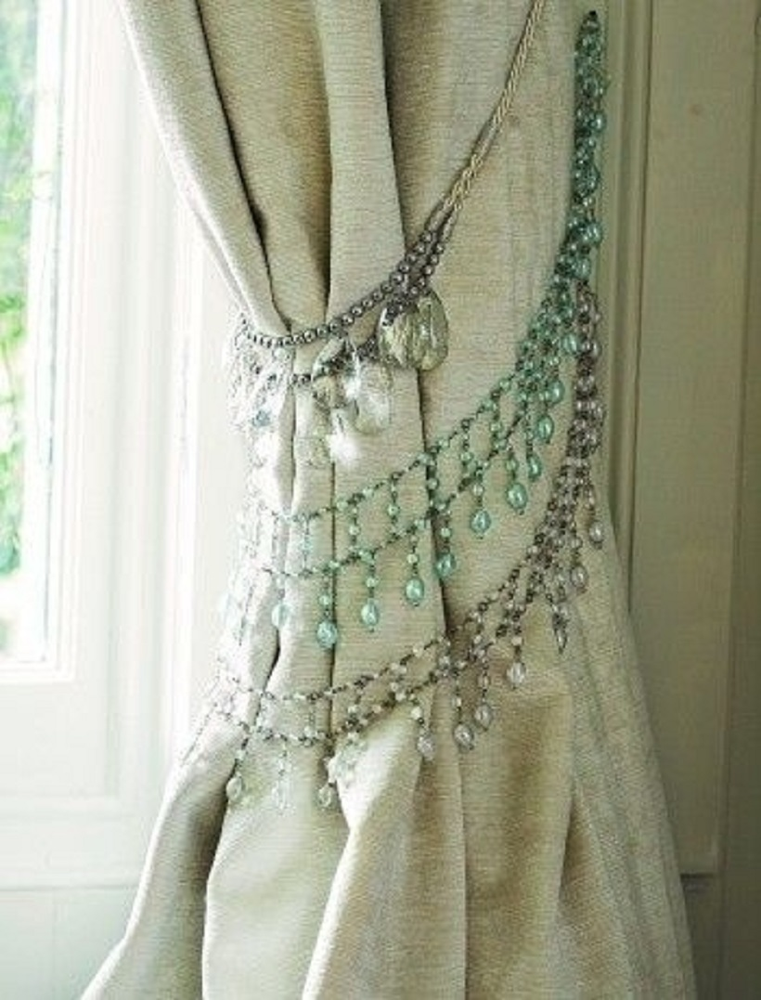
3.Hang mirrors with rope
You can also use rope to hang a mirror on the wall. Use this idea for the bathroom. You can give the space a chic and inexpensive makeover this way. Of course, the idea can also be applied to all sorts of other spaces and situations.
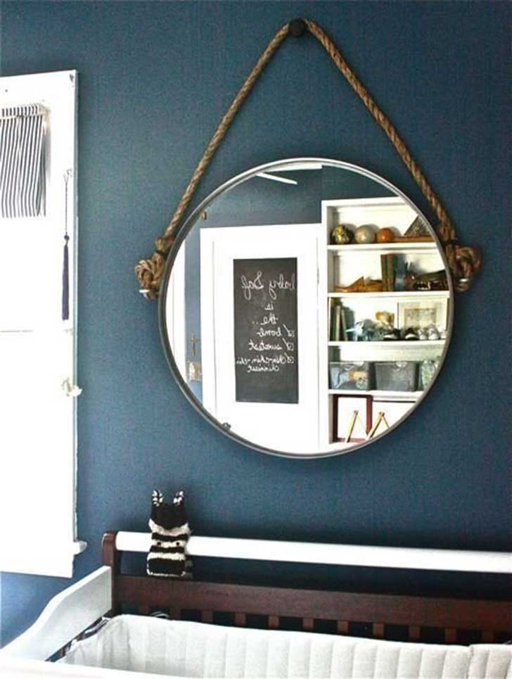
4.Kiddy Bank
1.Take a bottle,jar,box.
2.Make a thin rectangle cut on top so that money can be put inside the bottle.
3.Paint or decorate your bottle with your favourite colour and model.
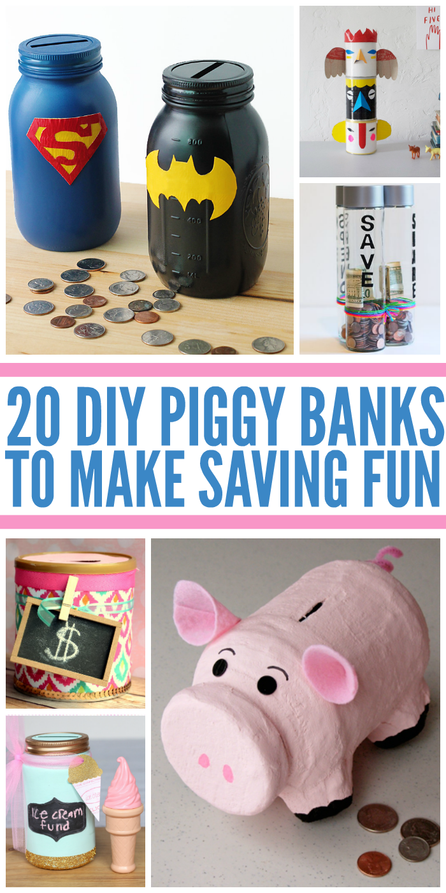
5. Pen Stand With Paper
Materials Required :
- Chart paper
- Ruler
- Pencil
- Glue
- Scissors
- Card paper
Method:
1.Cut the chart paper into a strip measuring 28cmX7cm.
2.Place a pencil diagonally over the chart paper and roll the paper over the pencil till you reach the end of the paper length.
3.Remove the pencil from within and secure the ends of the paper with glue.
4.Cut the edges of the paper so it looks like a straw.
5.Put pencil markings at the 8cm, 16cm and 24cm points on the chart paper.
6.Bend the chart paper at all these points and glue both the edges together to form a triangle.
7.Make multiple such triangles with different chart papers.
8.Cut a piece of card paper in the size of the triangle formed with the chart paper.
9.Cut the chart paper in a slightly bigger size and stick it on the card paper.
10.The card paper should now be covered with the chart paper on one side.
11.Cut another chart paper triangle and stick it to the other end of the card paper.
12.Stick one of the chart paper triangles on the card paper with the help of glue.
13.Apply glue and stick the second chart paper triangle in an inverted manner to form a star.
14.Continue stacking the chart paper triangles following the same pattern until the desired height is reached.

COMMENT BOX
Enter your name